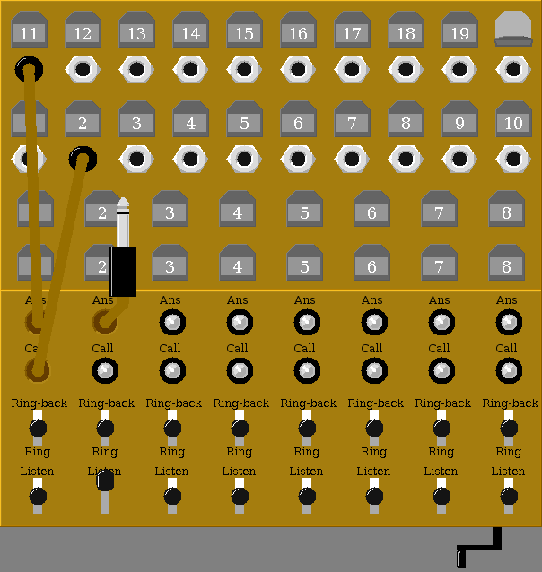
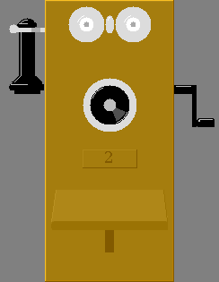

|  |
 |
This project is an attempt to create a simulation of what it was like, circa 1915, to make phone calls.
The simulation is still under construction, however mostly functional. It is modeled after a Kellogg Magneto Switchboard, circa 1915, and Stromberg-Carlson Magneto Telephones, of similar vintage.
Inspired by, and accuracy credited to, Kellogg Magneto Switchboards Bulletin No. 10 courtesy Mike Neale.
Project originally took the form of a physical switchboard created using modern electronics and telephones, documented Here.
An example session is presented Here.
Copyright © 2008, 2012, Douglas Miller